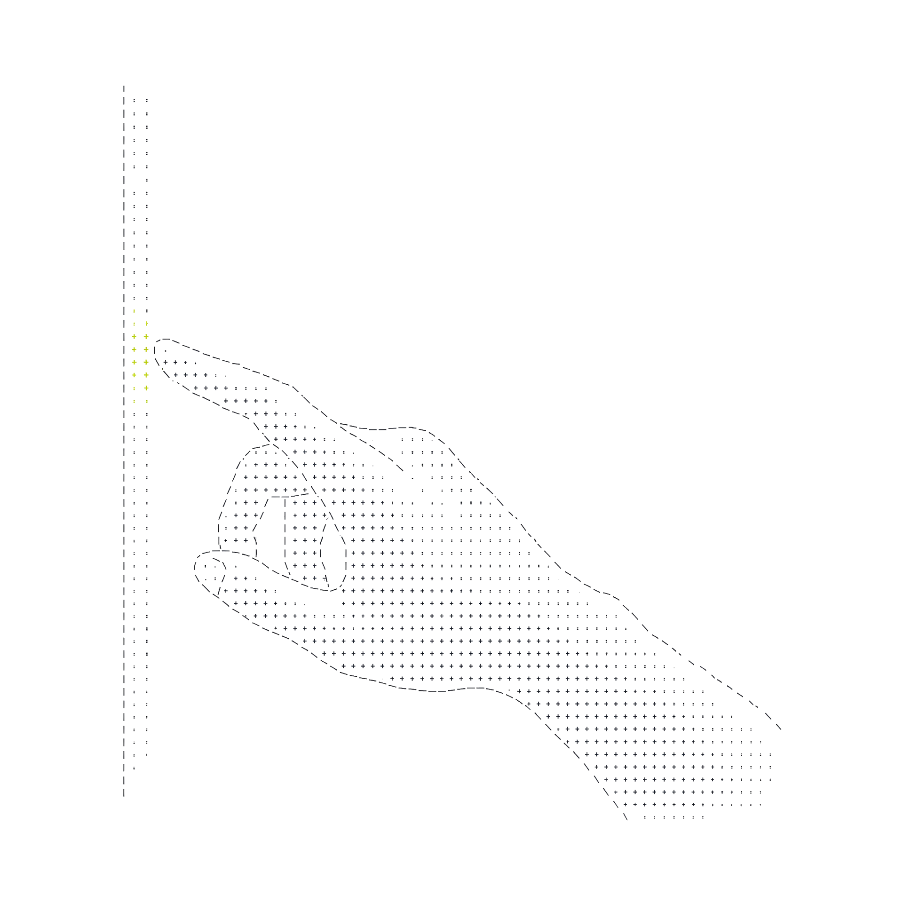

- INJECT
- response: delay 3000ms
- EXPECT
- [data-state='loading']
- CAPTURE
- loading.desktop.png
00 // SIGNAL — RUNTIME PROOF ENGINE
AGENTS SHIP THE HAPPY PATH. WE PROVE THE REST.
StateProof forces loading, empty, error and offline states at the wire — inside a controlled Chromium — and captures timestamped evidence for each one. No MSW. No proxy. Zero edits to your app.
01 // PROOF LINE
Four states walk the line.
Each one leaves evidence.
Synthetic responses injected at the wire — before your UI renders. Scroll to scrub down the evidence rail.
02 // INSTRUMENT
A hand on the wire.
Not a mock in your code.
Four instruments, one controlled browser process. Every assertion is observed from the outside — the way a user would meet it.
Zero-friction attach
Detects local Chrome or Edge on macOS, Linux and Windows. No 115 MB browser download, no sandbox lock-in. Remote CDP attach when you need it.
Recovery loops
Injects the 500, verifies the banner, clicks retry, re-fulfills the endpoint — and keeps before/after timestamped evidence of the whole loop.
Live socket drops
Severs WebSocket and SSE feeds mid-stream over raw CDP. Proves reconnecting banners and offline fallbacks — no local mock proxy involved.
DOM & pixel lens
Strict assertions on visibility, text and ARIA transitions — aria-busy="false" included — plus sub-pixel screenshot diffs against the last green run.

03 // PERIMETER
Local-first by architecture.
Not by promise.
Built for security-conscious teams and airgapped CI. Interception lives inside the controlled browser process — nothing phones home, because nothing can.
No analytics, no beacons, no cloud phone-home. Interception and evaluation run 100% on your workstation or CI agent.
Interception at the Chromium protocol layer via Playwright CDP. Zero monkey-patching, zero mock servers, zero app edits.
Hardcoded to localhost and 127.0.0.1. External origins stay denied unless you explicitly pass --allow-remote.
Proof cards and reports write to ./artifacts as self-contained HTML and Markdown. They open from file:// with no CDN at all.
04 // EXECUTE
Proof is one command old.
Point it at localhost. Sixty seconds later the unhappy paths are exhibits, not opinions.
STATES4/4 PASS
RUNTIME2.84s
TELEMETRY0 PINGS
EXIT0